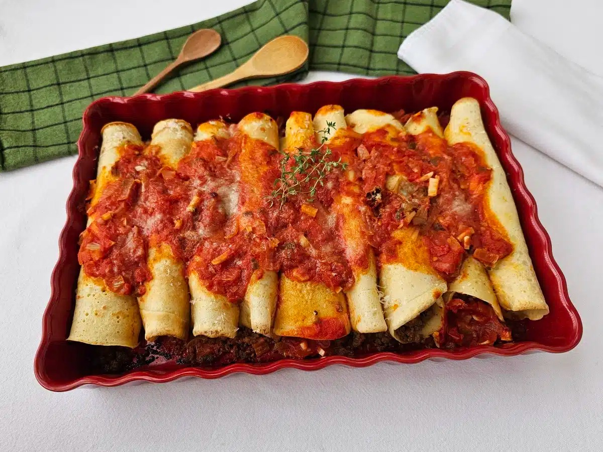

Home
Panqueca de carne moída

Porções: 9 a 10 und.
Tempo de Preparo: 90min
Clássica, completa e cheia de sabor, essa panqueca de carne moída é daquelas receitas que agradam toda a família. Com massa leve e macia, recheio bem temperado e um molho vermelho encorpado com toque de manjericão, o prato fica suculento e irresistível. Além de prática, é uma ótima opção para almoços em família ou até para preparar com antecedência e gratinar na hora de servir.
Ingredientes
Molho vermelho
- 1 lata de tomate pelado em cubos (com o líquido) (400 gramas)
- 1/2 cebola (90 gramas)
- 1/2 xícara de chá de alho-poró ou salsão picado (cerca de 1/2 talo)
- 2 dentes de alho
- 2 colheres de sopa de azeite
- 1 colher de café de pimenta calabresa (ou a gosto)
- Folhas de 3 ramos de manjericão fresco
- 1 colher de café de sal (ou a gosto)
- Queijo parmesão fresco ralado a gosto
Recheio
- 1 colher de sopa de azeite
- 1/2 colher de sopa de manteiga
- 1 kg de carne moída (optamos por patinho moído)
- 1 cebola média (180 gramas)
- 2 dentes de alho amassados
- 2 tomates médios (250 gramas)
- 1 colher de chá de pimenta-do-reino (ou a gosto)
- 1 colher de chá páprica (ou a gosto)
- 1 colher de café de chimichurri (ou a gosto)
- 2 colheres de sopa de cheiro-verde (ou a gosto)
Massa
- 3 ovos médios
- 3 xícaras de chá de leite (600 ml)
- 2 colheres de sopa de óleo
- 1 colher de sobremesa de sal
- 2 xícaras de farinha de trigo (240 gramas)
Modo de preparo
- Reúna os ingredientes da panqueca de carne moída. Se a carne estiver congelada, retire do freezer no dia anterior ao preparo e deixe descongelar na geladeira naturalmente;
- Para o molho vermelho, descasque e pique a cebola e o alho em cubos pequenos. Leve uma panela ao fogo médio e aqueça o azeite. Adicione a cebola, 1 pitada de sal e refogue por 4 minutos, ou até começar a dourar. Acrescente o alho-poró e refogue por mais 2 minutos, até murchar;
- Junte o alho e a pimenta calabresa e misture por mais 1 minuto para aromatizar. Coloque o tomate pelado, misture, tempere com 1 colher de chá de sal e, em fogo baixo, cozinhe por cerca de 30 minutos, até encorpar. Depois, desligue o fogo, misture as folhas de manjericão e reserve;
- Para o recheio, em uma panela, aqueça o azeite e a manteiga, e refogue a cebola com 1 pitada de sal, por 4 minutos ou até começar a dourar. Acrescente a carne moída e tempere com alho, páprica, chimichurri e sal. Misture bem até a carne moída ficar bem soltinha e dourar;
- Lave e pique os tomates em cubos bem pequenos. Adicione na carne moída, misture bem, prove e, se necessário, acerte sal e temperos. Refogue por mais 4 minutos, desligue o fogo, salpique cheiro-verde, misture bem e reserve;
- Para a massa, em um recipiente pequeno, quebre os ovos, um de cada vez, e transfira para o liquidificador - se algum estiver estragado, você não perde a receita toda. Junte o leite, o óleo e o sal. Bata por 1 minuto. Aos poucos, adicione a farinha e bata até obter uma massa lisa;
- Aqueça uma frigideira antiaderente (caso não tenha uma, unte a frigideira com manteiga ou óleo) e, com uma concha, adicione uma porção da massa no meio da panela, espalhando bem com as costas da concha, fazendo movimentos circulares para deixar a panqueca uniforme;
- Quando começar a formar pequenas bolinhas na massa e as laterais começarem a desgrudar da frigideira, vire a panqueca para dourar o outro lado. Reserve em um prato e repita o processo até acabar com toda a massa;
- Pré-aqueça o forno a 200ºC por cerca de 10 minutos. Escolha um refratário de 35 cm x 23 cm e cubra o fundo do recipiente com um pouco de molho vermelho - dessa maneira as panquecas não grudam nem ressecam na hora de ir ao forno;
- Para a montagem, em um disco de massa, coloque cerca de 2 a 3 colheres de sopa do recheio na extremidade da panqueca, deixando espaço nas laterais;
- Com cuidado, enrole o disco, apertando um pouco e deixando bem justinho para o recheio não cair. Transfira a panqueca para o refratário, com a abertura para cima - assim não corre o risco delas abrirem na hora de servir. Repita o processo com o restante da massa e recheio;
- Regue as panquecas com o restante do molho vermelho e polvilhe com o queijo parmesão. Leve ao forno por cerca de 20 minutos, ou até gratinar;
- Agora é só servir essas panquecas de carne moída deliciosas. Um prato suculento, saboroso e perfeito para os momentos em família. Aproveite!